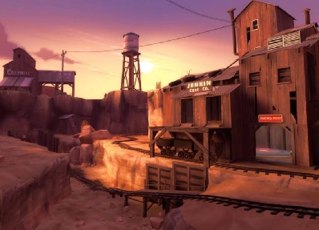
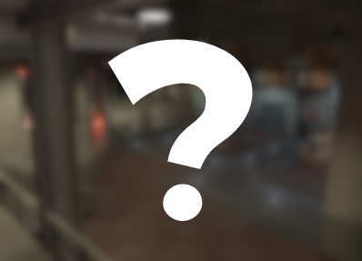
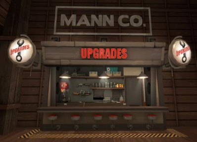
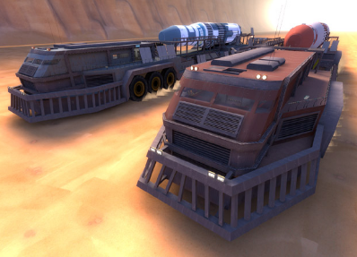
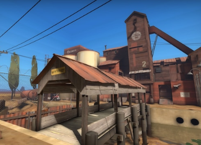
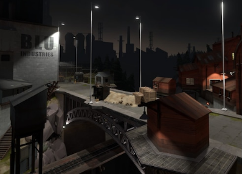

Server Information
-
/// Moon's Pub - Standard Maps
This server's map pool has every single Vanilla Map that comes with Team Fortress 2 Classified. Play your favorite maps from Dustbowl to Hightower, because all 70+ default maps are on here.
Map Rotation server, !rtv and !nominate are enabled.
This server has 24 Player Slots.
-
/// Moon's Pub - Custom Maps | 500+ Maps
Ever wanted to have a server with so many maps that it takes forever to nominate one? Ever want to partake in the !rtv lottery with a pool of Great and Shit Maps? If you do, this is the perfect server for you!
Map Rotation server, !rtv and !nominate are enabled.
This server has 32 Player Slots.
-
/// Moon's Pub - MVM Upgrades
Ever wanted to upgrade your stats and weapons in normal maps just like in MvM? If so, give this server a try! With a map pool of around 20 and with a longer map timer, this server makes stalemates actually fun.
Map Rotation server, !rtv and !nominate are enabled.
This server has 32 Player Slots.
-
/// Moon's Pub - Mixed Maps
With a smaller and more quality map pool, Mixed Maps is the perfect server for more relaxed and predictable gameplay. This server has 150+ Custom Maps and Standard Maps mixed together.
Map Rotation server, !rtv and !nominate are enabled.
This server has 24 Player Slots.
-
/// Moon's Pub - 24/7 2fort | TF2 Weapons
Ever wanted to play the normal TF2 Weapons for absolutely free? If so, this the perfect server for you to try weapon combos that don't usually exist in either game. For example, Rocket Jumper + Anchor or Hunting Revolver + Razorback. This server has infinite caps so the round never ends.
This is a 24/7 server, the map doesn't change.
This server has 32 Player Slots.
-
/// Moon's Pub - 24/7 Doublecross | TF2 Weapons
This is the same server as the one above but it's Doublecross.
This is a 24/7 server, the map doesn't change.
This server has 32 Player Slots.
-
/// Moon's Shitpost Sunday | Meme Maps

This is meme map hell. With over 200 Maps to randomly vote for, this is the perfect event to participate in if you want sheer chaos with terrible and funny maps!
This is a Limited Rotation server, only !rtv is enabled.
This server has 62 Player Slots.